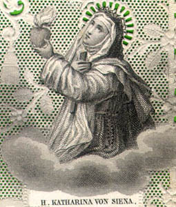
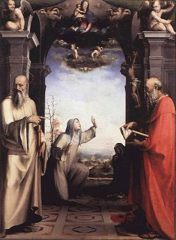
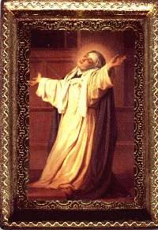
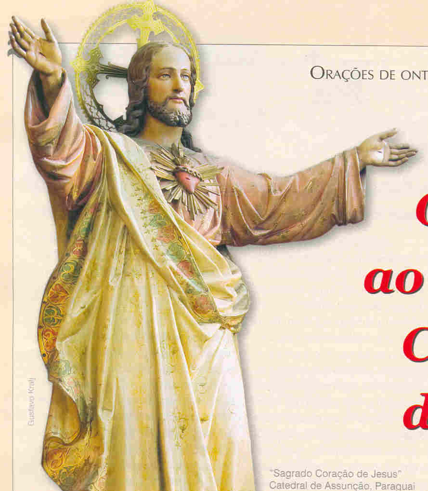
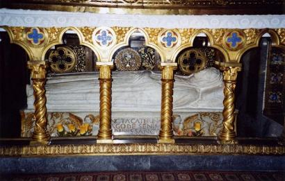

"VIDA PÚBLICA"
BUSCA DE PODER
Naquela
época, a guerra e a intolerância política ocupavam a mente da nobreza na Itália
e em toda Europa. Revoltas, lutas de influência entre as grandes 
Ela rezava em sua cela quando o SENHOR lhe apareceu e ordenou:
"Deves saber, querida filha, que os tempos vindouros de sua peregrinação neste mundo serão repletos de novos e maravilhosos dons provindos de MIM. Teu coração vai se inflamar tão fortemente pela salvação do próximo, abandonando sua timidez e receios, que lutará pela salvação das almas, independentemente de ser de um homem ou de mulher. Não fique perturbada e nada tema, EU estarei sempre contigo. Executarás com energia tudo o que o ESPÍRITO te sugerir".
Catarina tinha verdadeira aversão em conversar ou lidar com pessoas do sexo oposto. Todavia em face da ordem específica do SENHOR, configurou o seu gênio e perseverantemente controlou sua vontade pessoal.
Em meados do ano 1368 aconteceu em Sena, uma revolta do povo contra os "Doze" os doze dirigentes da cidade (que substituíram os antigos "Nove"). A família da Santa também corria perigo, porque os amotinadores acusavam os seus irmãos de traição. Ameaçados de morte, ela corajosamente conseguiu salvá-los, abrigando-os no Hospital La Scala.
Praticamente sua vida publica começou em 1370 com o retorno a Roma, do Papa que estava em Avignon na França, que era uma providência insubstituível para o caminhamento de seus ideais. Isto porque, os dois grandes ideais de sua vida: a Cruzada para a reconquista do Reino de Jerusalém e uma Profunda Reforma na Igreja, só poderiam ser concretizados com a presença do Papa em Roma.
Sob o estímulo de Santa Brígida da Suécia, o Papa Urbano V, que estava em Avignon (Cisma do Ocidente), retornou a Itália, mas só permaneceu algum tempo, e depois retornou a França, onde morreu em Avignon no dia 19 de Dezembro de 1370. Teve Catarina alguma relação com este Papa? Verdadeiramente não se sabe. Contudo, ambas as Santas, Santa Brígida e Santa Catarina, prosseguiram firmes no mesmo objetivo de fazer retornar a Roma, a residência papal.
Contando com a intervenção do Cardeal de Óstia, Pietro d'Estaing e do Abade de Lézat, Berengario, que eram legatários na Itália do novo Papa, Gregório XI, estabeleceu-se uma ligação entre Catarina e o novo Pontífice. A partir de então, aconteceu a sua ação política, sempre inspirada pelo mesmo ideal, conforme se observa por sua notável correspondência.
O Papa Gregório XI já estava com a intenção de "abandonar o cativeiro" de Avignon, voltando a Roma, com toda a administração papal. Em 17 de Abril de 1374, ele declarou publicamente esse projeto diante do Consistório (reunião dos Cardiais). E assim, desejoso de se informar melhor sobre Catarina, a fim de se aliar mais estreitamente com ela, enviou em missão o Bispo Alfonso de Valdaterra, que tinha sido confessor de Santa Brígida da Suécia (falecida em Roma em 23 de Julho de 1373). A Santa enviou missiva agradecendo ao Sumo Pontífice e se colou a disposição do Papa.
CIÚMES E INVEJAS
O modo de vida da Santa, o fervor com que se dedicava a busca da santidade, a sua intermediação nas questões da Igreja, e a veneração que seus partidários tinham por ela, naturalmente criaram duas correntes: os seus fieis amigos, e os descrentes, que não acreditavam, tinham inveja e criavam todos os tipos de dificuldades. Com objetivo de deixar tudo bem esclarecido quanto a sua pessoa e o seu caráter, no mês de Maio de 1374, ela foi convidada a se apresentar diante do Capítulo Geral dos Dominicanos (Ordem da qual fazia parte como leiga terciária), em Florença, sob a presidência do Mestre geral, Frei Elie de Toulouse. Ela foi submetida a um interrogatório, que lhe foi totalmente favorável. Então decidiram que ela deveria ter um Diretor Espiritual, encarregado de "dirigi-la e corrigi-la espiritualmente, naquilo que fosse oportuno". Foi escolhido para seu Diretor Frei Raimundo de Cápua, um Padre Dominicano com 44 anos de idade.
A TERRÍVEL PESTE

O diretor do Hospital de Santa Maria da Misericórdia, senhor Matteo di Cenni di Fazio, era um homem de grandes virtudes e muito amigo de Catarina, também ele foi atingido pela epidemia. Frei Raimundo, confessor da Santa, foi ao Hospital para dar assistência aos doentes, e lá encontrou o senhor Matteo quase morto, sendo conduzido pelos freis e clérigos da casa, estava tão mal que nem conseguia falar. De volta ao quarto no Hospital, recuperou a lucidez, se confessou e recebeu a absolvição. Conversando com Frei Raimundo disse: "Sinto uma dor tão forte na virilha que parece alguém querer me arrancar o fêmur, e também uma dor de cabeça tão grande, como se quisessem dividi-la em quatro".
Como também estava com febre muito elevada, Frei Raimundo mandou colher à urina dele para exame. O Dr. Senso especialista que tratava da epidemia fez o exame e concluiu o diagnóstico: "Ele está com peste e à morte é iminente". Frei Raimundo retornou ao Hospital muito triste, rezava incessantemente com lágrimas nos olhos, cheio de pesar. Catarina foi comunicada sobre o fato e se deslocou rapidamente até o Hospital. Lá chegando, correu em direção à ele gritando desde longe: "Levante-se Matteo, levante-se, não é hora de ficar descansando ociosamente no leito"! No mesmo instante, a febre, a tumefação, as dores, tudo desapareceu. Aconteceu um milagre. O confessor da Santa escreveu:"A natureza tinha obedecido a DEUS pela boca intercessora da jovem Catarina". Também ele, Frei Raimundo, na continuidade foi atingido pelo "inchaço que indicava a peste". De joelhos e com a mão na testa do seu Confessor, Catarina rezou e entrou em êxtase. Quando retornou, vendo Frei Raimundo perfeitamente revigorado deu-lhe a seguinte ordem: "Agora vá trabalhar pela salvação das almas e dê graças ao Altíssimo que o tirou do perigo".
A POLÍTICA QUE INCOMODAVA
Em Março de 1375, convidada por Pietro de Gambacorta foi a Pisa, acompanhada de sua eficiente "brigada": Frei Raimundo, Padre Bartolomeo di Domenico e Padre Tommaso della Fonte. O objetivo era convencer as autoridades de não se aliarem a Bernabo Visconti e aos seus asseclas, contra o Papa, e participar da Cruzada, que era o grande projeto que ela almejava em sua vida.
Em 1º de Abril, um Domingo de Ramos, ela assistiu à Santa Missa celebrada por Frei Raimundo, na Capela Santa Cristina. Após a Comunhão, entrou em êxtase. Seu corpo que estava prostrado estirado ao solo levantou-se aos poucos, se pondo de joelhos, os braços se abriram em cruz, o rosto se iluminou. Permaneceu assim, inerte e com os olhos fechados, por muito tempo. Depois, de repente caiu como que ferida de morte, mas logo recuperou integralmente suas forças. Descreve Frei Raimundo: "Ela me chamou e disse em voz baixa:""Saiba Padre, que pela misericórdia do SENHOR, levo no corpo esses estigmas. Vi o SENHOR pregado na Cruz vir até mim em meio a uma grande luz. O arrebatamento da minha alma, desejosa de ir ao CRIADOR foi tão grande que meu corpo foi obrigado a subir. Daí essas cicatrizes de Suas Santas Chagas; vi descer na minha direção cinco raios de sangue, dirigidos para as minhas mãos, meus pés e meu coração. Compreendendo o mistério, imediatamente exclamei: meu SENHOR e meu DEUS, eu TE suplico que as cicatrizes não apareçam externamente em meu corpo. Enquanto eu dizia isso, antes que os raios chegassem a mim, mudaram de cor, de uma cor de sangue para uma brilhante, e sob a forma de uma pura luz alcançaram aqueles cinco pontos de meu corpo". "Então perguntei: Agora sentes dor em todos esses lugares"? Dando um suspiro, ela respondeu: "Sinto muita dor, principalmente no coração, de tal forma que, se o SENHOR não fizer o milagre de me preservar, me parece impossível viver assim, então morrerei em poucos dias".
Na cidade de Pisa intensificou a sua atuação, misturando de certa forma religião e política, escrevendo cartas buscando estimular aliados para a Cruzada contra os turcos, dando conselhos espirituais, procurando ajudar a todos que necessitavam de sua atenção. Os turcos ameaçavam invadir a Europa e ela escreveu a Rainha Isabel da Hungria, alertando sobre o perigo que os otomanos representavam ao seu país. Catarina não era a única que almejava o projeto das Cruzadas, a Rainha de Chipre também sonhava com ela, pois considerava absolutamente justo que os turcos não obstruíssem a passagem dos cristãos que quisessem visitar o Santo Sepulcro e os lugares Santos em Jerusalém.
Entretanto havia muitos problemas urgentes, que precisavam ser socorridos. O abuso praticado pelas autoridades, o desentendimento entre os legatários do Papa agitava o povo e conclamava a rebelião. As incessantes hostilidades entre a França e a Inglaterra também ajudava a retardar o retorno do Pontífice a Roma, planejado desde Fevereiro de 1374. As autoridades de Florença junto com os Estados da Igreja descontentes com os legatários do Pontífice se opunham fortemente ao retorno do Papa Gregório XI. Isto, fez com que Catarina deixasse a idéia da Cruzada e enfrentasse este novo combate, objetivando preservar a autoridade do Papa.
NOVO PAPA
Bartolomeo
Prignamo era Arcebispo de Bari e sua eleição foi muito tumultuada, porque a
população, principalmente os italianos, ameaçavam os Cardeais 
Em Florença os Padres e Religiosos se mantinham em guerra e em total desobediência a Santa Sé. Catarina estava em plena atividade, agindo para que cessassem os conflitos e acontecesse a reconciliação. Agia, aguardando diligentemente a oportunidade de poder acionar os seus ideais: a paz entre os Estados cristãos, a reforma do clero e a cruzada contra os turcos infiéis.
Até que finalmente, em Julho de 1378, a paz se restabeleceu entre Florença e a Santa Sé. Mesmo assim, dois dias depois da proclamação da paz, Florença ainda foi palco de sangrentas lutas entre os remanescentes revoltados dos dois grandes partidos: os gibelinos, partidários do império contra os guelfos, amigos de Catarina e do Papa.
O DIÁLOGO
Um breve período de tranquilidade chegou para Catarina e ela pode desfrutar com alegria o bom resultado de seus esforços e preces: o Papa estava instalado em Roma e a paz reinava no interior do cristianismo. Suas preces, a orientação espiritual, as obras de caridade, tudo era inspirado pela Voz Divina que ouvia, ou pelas visões e êxtases que era agraciada. E todas as manifestações sobrenaturais que ocorreram, assim como a sua rica e preciosa experiência espiritual, foram colocados num livro denominado "Diálogo". Como ela não sabia escrever, ditou todos os acontecimentos para três secretários que eram seus discípulos: Barduccio Caniggiani, Stefano Maconi e Neri di Landoccio. O Livro também foi denominado: "Livro da Doutrina Divina", composto e organizado entre o outono de 1377 e o começo do outono de 1378.
Com a linguagem figurativa que o SENHOR normalmente utiliza, na Doutrina da Verdade ELE se deleitava com a sede e a fome espiritual de Catarina, com a pureza de seu coração e o desejo que ela dizia querer sempre servi-LO, e então, "a convida a se elevar acima de si mesma" e "abrir o olho da inteligência" , isto porque, "a alma que não vê com o olho da inteligência", fixado na Verdade Divina, "não pode ouvir e nem conhecer a Minha Verdade", disse o SENHOR.
A Santa também ouviu DEUS lhe explicar como a Sua Luz Divina derrama sobre a alma que LHE acolhe: "Sou o fogo que purifica a alma, é por isso que, quanto mais a alma se aproxima de MIM, mais ela se torna pura, e, quanto mais se afasta, mais imunda ela fica".
E repleta de ternura, Catarina ouve a voz do SENHOR ganhar entonações mais severas contra os pecados da humanidade, revelando a imensidão da tristeza Divina pelo impressionante domínio da vaidade, do orgulho (causa primeira da desobediência) e do comodismo no coração das pessoas. Com vigor o CRIADOR realça a realidade, de que a humanidade vive buscando satisfazer o seu interesse e seu objetivo pessoal, e sempre se esquece DELE. Às vezes, quando se lembram, envolvidos pelo peso da consciência ou de alguma necessidade, embora presentes diante de DEUS, não demonstram o necessário fervor espiritual e fogem das ações e sacrifícios compensatórios, que apontam para a conversão do coração, e como maneira de melhor agradar e servir ao SENHOR.
"Quero somente amor". Repetia a Voz que Catarina em êxtase ouvia.
As palavras e as imagens elaboradas pelo SENHOR se acumulam e crescem, à medida que Catarina as ditava para que seus discípulos escrevessem. Eram ecos e reminiscências dos textos das Sagradas Escrituras e de notáveis ensinamentos teológicos e espirituais. Em todos eles, a tristeza do CRIADOR se derrama torrencialmente, porque DEUS, bondade infinita, quer a salvação eterna de todos os seus filhos. Em todas as frases, apesar do desapontamento Divino, o SENHOR também deixa aberta a porta da reconciliação, ornada de esperança, no retorno amoroso da humanidade.
Depois de enumerar todos os benefícios das virtudes da paciência e da obediência, caminhando para a conclusão do "Diálogo" ela retorna aos quatro pedidos feitos ao SENHOR no inicio do texto: suplicando primeiro em seu benefício pessoal e de sua vida; o segundo pedido era pela necessária reforma da Igreja; o terceiro pedido é para que acontecesse a paz no mundo e em particular que existisse paz entre os cristãos; o quarto pedido ela suplica a Divina Providência que atuasse de um modo geral e particularmente num caso que ela especialmente pedia.
Afirma a Voz: "Tudo é Providência, tudo é amor. A verdade é que EU vos criei para que tivésseis a vida eterna. Essa verdade vos foi manifestada pelo Sangue do VERBO, Meu FILHO Único". (O SENHOR está se referindo a humanidade de todas as gerações).
São profundas e repletas de ternura, as palavras que Catarina ouviu do SENHOR e as transmitiu aos seus discípulos, com todo o vigor e a indizível doçura de seus encontros com o Hóspede Divino Invisível.
O GRANDE CISMA DO OCIDENTE

Catarina, sem hesitação, tomou o partido de Urbano VI, ela, que desde junho de 1378, lhe escrevia cartas para incitá-lo a paciência e ao perdão, além de fortalecê-lo na verdadeira caridade. Assim, com disposição, se dedicou a causa do Bispo de Roma, enviando cartas de estimulo a todas as pessoas importantes que simpatizavam com a causa do Papa italiano. O mundo cristão ficou praticamente dividido.
Com o propósito de ajudar, ela chegou a Roma no final de Novembro de 1378, acompanhada de seus discípulos e de algumas "mantellate". Sem cansaço e sem poupar forças defendeu vigorosamente à unidade da Igreja, pregando a obediência ao autêntico sucessor de Pedro. As ordens religiosas, os Mosteiros, as Universidades, o Clero secular, e também os simples fieis estavam também divididos, reinando grande confusão religiosa em todas as partes. Mas as preces e orações também se multiplicavam por iniciativa dos corações de boa vontade, suplicando a DEUS pela unidade da Igreja.
Catarina percebendo com lucidez a gravidade da situação e sabendo do gênio forte e impulsivo do Papa Urbano VI, com sua espontaneidade e franqueza habituais, se aproximou decididamente do Pontífice como conselheira espiritual, insistindo no exercício do modelo Divino, imitando a bondade de DEUS, a doçura e humildade do Salvador, que inclusive se submeteu aos mais terríveis e abomináveis suplícios e flagelações, deixando jorrar de Seu Coração aberto pela lança, uma volumosa e infinita torrente de graças arrastadas pela grandeza de Seu Amor atrelado a Sua incomensurável Bondade. Naquele momento difícil era extremamente necessário procurar seguir o exemplo do SENHOR.
A Santa mandou o seu Diretor Espiritual, Frei Raimundo de Cápua, em missão a França, para tentar acabar com o Cisma. Mas ele fraquejou, estava sem coragem de enfrentar aquelas imensas dificuldades da missão. Ela insistiu com diversas cartas, e por fim ele partiu, mas foi preso pelos cismáticos, e só foi libertado depois de muitos testemunhos favoráveis.
Por outro lado, multiplicavam-se os convites feitos a numerosas pessoas a quem o Papa, aconselhado por Catarina, concedia indulgência plenária. Mas o resultado apresentado por este projeto, apesar do empenho da Santa, foi apenas parcialmente satisfatório. Isto porque, alguns simplesmente recusaram recebê-lo, outros revelaram aversão ou permaneceram surdos, mas outros, apesar da idade, se apressaram em chegar a Roma, enquanto alguns acolheram generosamente ao convite.
Nos primeiros meses de 1379, a luta continuava acesa. O Papa Urbano VI com o seu gênio forte excomungou o Cardeal Roberto de Genebra e todos os cismáticos. As operações de guerra aconteciam em todas as regiões: com pilhagens, devastações, saques, ataques e contra-ataques, com adesões, traições, reviravoltas, acusações e condenações recíprocas envolvendo as duas partes.
No começo de 1830, Catarina estava esgotada. Aos grandes sofrimentos físicos sobrepunha-se o peso da tristeza de presenciar o pecado da Igreja divida e das almas que ela queria arrancar do pecado, sem, contudo, alcançar algum êxito. Mesmo assim, todos os dias, ela caminhava até a Basílica de São Pedro no Vaticano e ali permanecia por longas horas em orações, suplicando a misericórdia Divina. Ela não se contentava em rezar pelo Papa, assim como pela unidade e pela reforma da Igreja, mas orava também pelas almas de seus servidores, por seus próprios discípulos e pela paz no mundo. Com o fogo incandescente de seu fervor e com a força decidida que caracterizava a sua vontade, ela oferecia a própria vida em troca daquilo que pedia a DEUS.
Em 20 de Janeiro de 1380, escreveu pela última vez ao Papa Urbano VI, numa derradeira tentativa de amainar o seu caráter violento que facilitava conseguir inimigos. Então, por uma longa carta, o convida novamente e com insistência, ao cultivo da doçura e caridade cristã. O Papa às vezes agia de modo impensado, prometendo mais do que podia cumprir. Por isso mesmo, quando era preciso adverti-lo sobre possíveis consequências resultantes deste procedimento, de modo fraterno e respeitoso, mas incisivo e franco, ela nunca se omitiu em fazê-lo.
No dia 29 de Janeiro de 1830, escreveu a última carta ao seu confessor Frei Raimundo de Cápua. Estava em sua cela e tinha acabado de ditar diversas outras cartas. Sentia o corpo completamente cheio de dores, mesmo assim, descreveu o seu sofrimento físico e psíquico, pelo abominável assédio de satanás:
"Há pouco começaram os terríveis ataques dos demônios que querem me perturbar. Estão furiosos comigo, como se eu, que não passo de um verme, lhes tivesse arrancado das mãos o que tinham possuído durante muito tempo dentro da Igreja. E o terror era tão grande que eu queria fugir da cela e ir à Capela, como se minha cela fosse à causa de meus tormentos".
Caída ao chão, aparentemente morta, sentiu-se fora de seu corpo, como se ele não tivesse mais vida.
"Deixei então o corpo onde estava, e minha inteligência se fixou no abismo da TRINDADE. Minha memória estava repleta de lembranças das necessidades da Igreja e do povo cristão. Então clamei diante de DEUS e supliquei com confiança que me socorresse".
O êxtase foi seguido de uma revelação muito grata, como um sinal da finalidade de sua existência, como ela mesma dizia: "darei a minha vida pela Igreja". Escreveu Catarina:
"Cessou o terror provocado pelos demônios, e o humilde CORDEIRO veio se oferecer à minha alma, dizendo":"Fique certa de que irei satisfazer os teus desejos e os de meus outros servidores, pois quero que vejas que sou um Bom Mestre. Ajo como o oleiro que desfaz e refaz os seus vasos como bem lhe apraz. Desfaço e refaço meus vasos conforme a Minha Vontade. É por isso que tomei o vaso do teu corpo e o refiz no Jardim da Santa Igreja, ele é diferente do passado". "E a VERDADE me instigava por graças e palavras que não quero revelar. Meu corpo começou a respirar um pouco e a mostrar que a alma tinha voltado ao seu vaso".
A prova não tinha terminado. Sentindo uma grande dor no coração, ela foi transportada para a sua cela acima da Capela. O ataque do maligno recomeçou com mais intensidade:
"Meu quarto me pareceu cheio de demônios que começaram a me atacar. Foi o combate mais terrível que enfrentei, pois queriam me fazer crer que não era eu que estava em meu corpo, mas um espírito imundo".
Catarina pediu a DEUS que a socorresse. O tormento continuou por duas noites e dois dias, até que alvoreceu:
"Quis assistir a Santa Missa e então, todos os mistérios foram renovados em mim. DEUS me mostrou o grande perigo que rondava a Igreja, já que Roma estava pronta a se revoltar, como se viu depois, e só se ouviam injúrias e ultrajes. Mas quis DEUS amolecer os corações raivosos, e creio tudo terminará bem, porque isto é a Vontade DELE".
A carta continua com o relato e todos os sofrimentos que Catarina suportou para salvar "o navio da Santa Igreja" , ao qual o seu Confessor foi chamado a se consagrar, recolhido na "cela de seu coração, com uma verdadeira e perfeita humildade".
Ela também pede a Frei Raimundo de Cápua que recolha todos os seus escritos cartas e textos, e "deles façais o que julgardes mais útil à glória de DEUS". Termina a missiva com um tom de grande confiança e estima, testemunhando a profunda afeição que dedicava ao seu Mestre Raimundo.
MORTE DE CATARINA
Ela
estava fisicamente esgotada. Barduccio Canigiani, um de seus filhos espirituais,
permaneceu ao seu lado até o fim. No começo de sua agonia, passou oito 
Na presença de seu Confessor Frei Raimundo de Cápua, disse no seu leito de morte aos seus filhos espirituais: "Tende a certeza, caríssimos filhos, de que dei a vida pela Santa Igreja".
Barduccio relata os seus últimos instantes:
"Ela chegou ao fim tão desejado, sempre rezando, e dizia":"SENHOR, TU me chamas para que eu vá a TI, e eu vou. Por certo, não por causa de meus méritos, mas graças somente a TUA Misericórdia. É ela que TE peço em nome do Sangue dulcíssimo de TEU FILHO". "E clamou varias vezes":"Ó sangue de DEUS, ó Sangue Divino". "Em seguida falando com grande doçura, disse":"PAI, em tuas mãos eu coloco a minha alma". E Catarina partiu para a eternidade com 33 anos de idade. Era quase doze horas da manhã (meio-dia) do domingo, dia 29 de Abril de 1380.
Em sua época, Catarina só era conhecida pelos seus discípulos, pelos destinatários de suas cartas (mais de trezentas) e aqueles que viveram na sua proximidade. Sua morte foi ignorada pelos cronistas. A "Legenda Maior" escrita em 1393, pelo seu Confessor Frei Raimundo de Cápua, que descreve a história de sua vida, foi que conferiu a uma mulher leiga, simples terciária dominicana, "mantellate", a garantia de sua santidade, e a necessária divulgação, que ajudou com informações precisas o processo de sua canonização.
A Bula Papal de Canonização foi retardada, em face dos conflitos do Grande Cisma, sendo concedida somente em 29 de Junho de 1461 pelo Papa Pio II, marcando o começo da celebridade da Santa.
Em 1970 foi declarada Doutora da Igreja pelo Papa Paulo VI. Em 1º de Outubro de 1999, o Papa João Paulo II, pela Carta Apostólica em "Motu Próprio", a declarou co-padroeira da Europa, juntamente com Santa Brígida da Suécia e Santa Tereza Benedita da Cruz. Sua Festa é comemorada no dia 25 de Março.